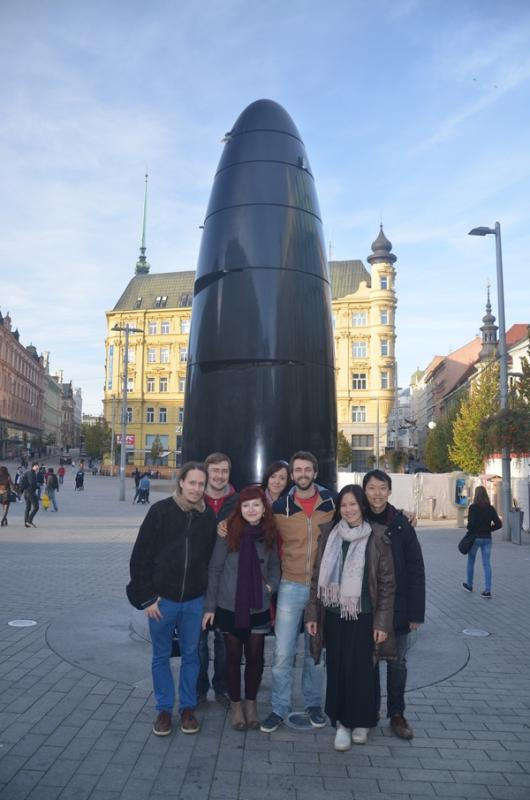
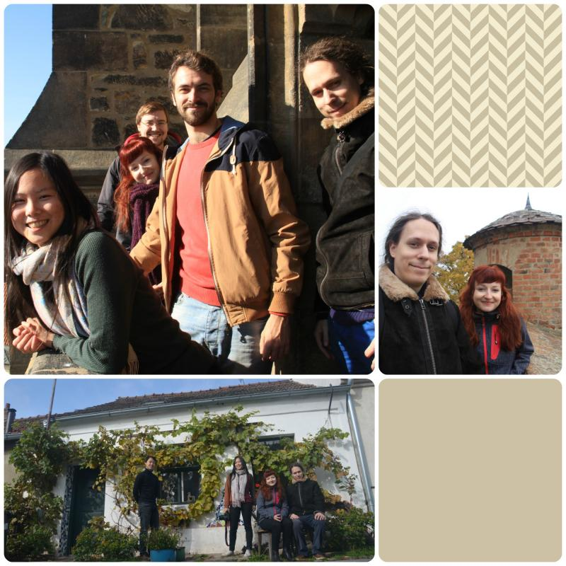
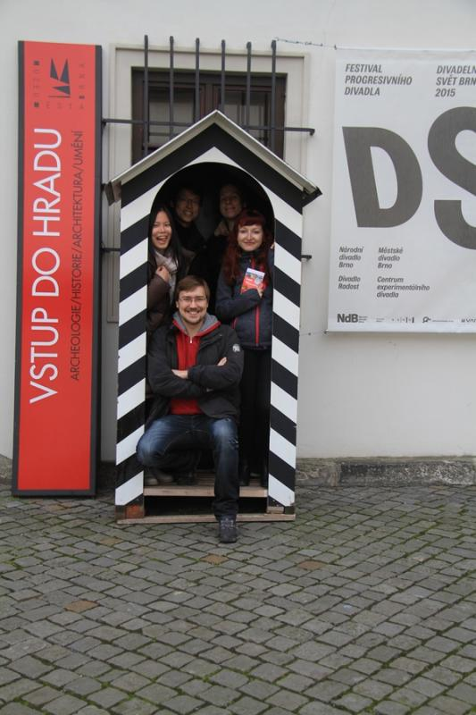
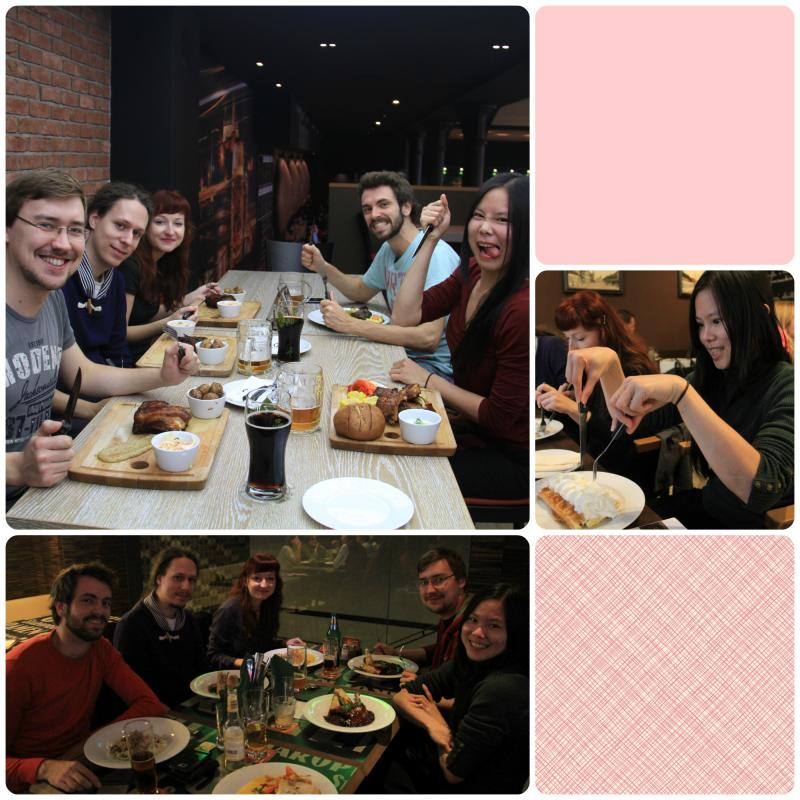
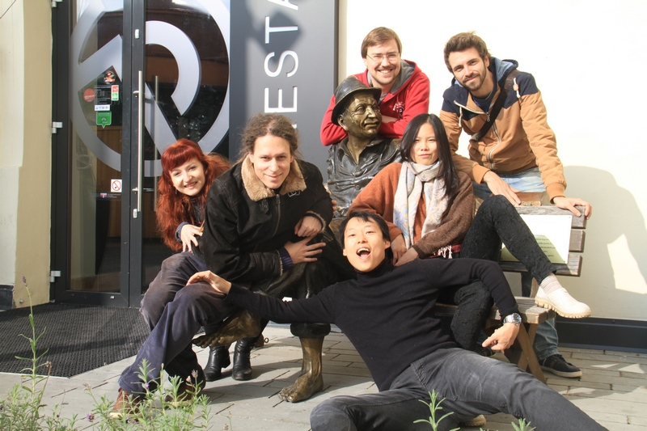

Od naší cesty na Taiwan už uplynulo více než půl roku, ale stále mi tu na blogu visí jeden rest, a sice zmínka o tom, že krátce před naším odjezdem se v České republice objevila na malou chvíli Mendy. Brno navštívila v rámci své dovolené, kdy cestovala za přítelem Julienem do Paříže, a strávila s námi jeden říjnový víkend.

My všichni u brněnské dominanty :-D
Přestože v Brně Mendy strávila celý rok svého života, vzpomínky už vybledly, a tak jsme ji i s Julienem, pro něhož to byla první návštěva Brna, vzali na naše oblíbená místa jako Petrov, Špilberk, Svoboďák, letohrádek Mitrovských nebo do Kamenné kolonie, kam povinně vláčíme všechny naše hosty :-D.

A počasí nám přálo.
Návštěva řady míst ovšem byla premiérová i pro nás - třeba výstup na věž katedrály sv. Petra a Pavla nebo do tajemných špilberských kasemat. Na Špilberku se také zrovna konala zajímavá výstava “Žít pivo” o historii pivovarnictví v Brně, kterou jsme si nemohli nechat ujít.

Kolik lidí se vejde do jedné budky?
A samozřejmě nesměla chybět ani gastronomická vložka! Halušky ve Skanzenu, velkolepý oběd v Potrefené huse, nejlepší domácí wafle v Kafecu, pečená žebra ve Starobrněnském pivovaru nebo čajový dýchánek v Utopii :-).

Na jídle jsme se fakt nešidili ;-)
Zkrátka a dobře to byl zážitky nabitý víkend, který nám opět připomněl, že Brno je fajn město, zvlášť když ho můžete znovu “objevovat” s fajn lidma :-)

Na blbosti nás užije :)